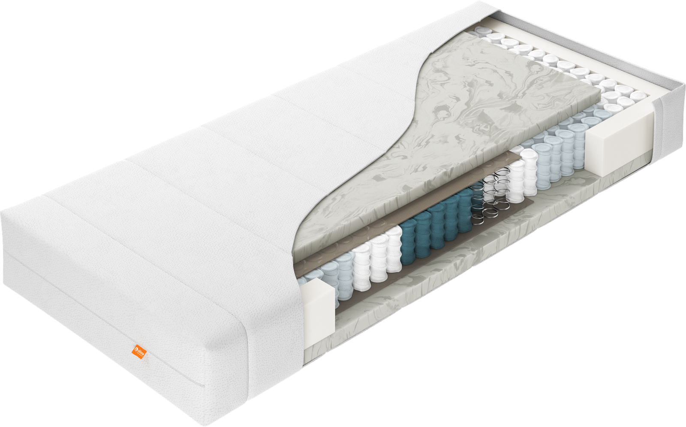
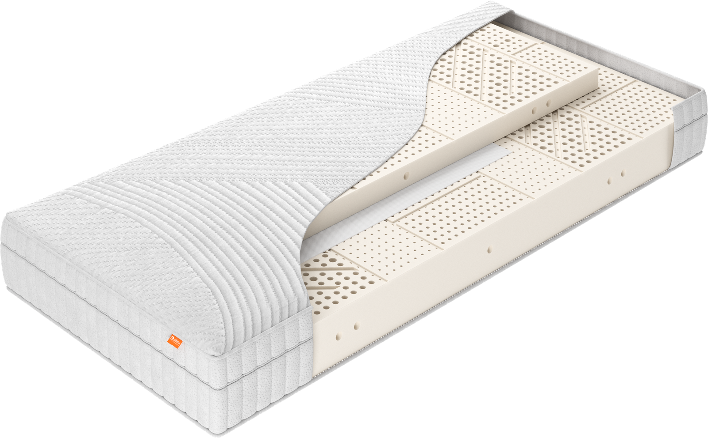

Producten — Matrassen
Ondersteuning die zich aanpast aan jouw lichaam.
Onze matrassencollectie bestaat uit vier series, elk met een eigen opbouw en comfortkarakter. Ontdek welke serie bij jouw ligvoorkeur past.
01 — Initio
Instapcomfort, in twee uitvoeringen.
Initio is onze toegankelijke instaplijn en bestaat uit twee modellen — PE10 en PL20 — met exact dezelfde opbouw, op één verschil na: de boven- en onderlaag van 4 cm. Een 7-zone pocketveringkern met juten drukverdeler zorgt voor gerichte ondersteuning per lichaamsdeel, terwijl de keerbare opbouw zorgt voor gelijkmatige slijtage en een langere levensduur. Beide modellen zijn verkrijgbaar in 4 hardheden: soepel, medium, stevig en extra stevig.
- 2 modellen: PE10 (Energyfoam) en PL20 (geperforeerd latex)
- 7-zone pocketveringkern met juten drukverdeler
- 4 hardheden: soepel, medium, stevig, extra stevig
- Keerbaar, voor gelijkmatige slijtage
- Wasbare tijk, gevuld met klimaatvezel
Goed om te weten: een keerbare matras zoals Initio verdien je op de lange termijn terug — regelmatig keren voorkomt een blijvende ligkuil.
Bekijk PE10 en PL20 in detail
Initio CumLaude
CumLaude
02 — CumLaude
Een aparte comfortlaag, specifiek voor het ligcomfort.
CumLaude bouwt voort op een 7-zone pocketveringkern, met een aparte comfortlaag bovenop die per model verschilt — van Energyfoam en verschillende soorten latex tot natuurlatex en traagschuim (6 modellen: 1000 t/m 6000). Deze laag is niet keerbaar — de bovenzijde is specifiek ontwikkeld voor optimaal ligcomfort — maar dankzij de symmetrische opbouw kan de matras wel van hoofd- naar voeteneind gedraaid worden. Verkrijgbaar in 4 hardheden en met een tijk naar keuze: Climate (open 3D-structuur voor extra ventilatie) of Natura (gevuld met scheerwol). Totale hoogte ca. 24 cm.
- 6 modellen (1000–6000), elk met een eigen comfortlaag
- 7-zone pocketveringkern
- 4 hardheden: soepel, medium, stevig, extra stevig
- Tijk naar keuze: Climate (ventilerend) of Natura (scheerwol)
- Anti-slipsysteem aan de onderzijde
- Niet keerbaar — bovenzijde specifiek voor ligcomfort ontwikkeld
- Wel te draaien van hoofd- naar voeteneind, dankzij de symmetrische opbouw
- Optioneel met uitgebreide schouderzone (Elastica)
Goed om te weten: met 6 comfortlagen heeft CumLaude de breedste keuze binnen de collectie — ideaal als je tussen partners een verschillende ligvoorkeur wilt combineren.
Bekijk alle 6 comfortlagen in detail03 — Summum
Onze meest luxueuze lijn.
Summum is de meest luxueuze serie binnen onze matrassencollectie: een luxe katoenen tijk in combinatie met een kokos drukverdeler zorgt voor extra ondersteuning én ventilatie, voor een koele, stabiele nachtrust.
- 3 modellen
- Luxe katoenen tijk
- Kokos drukverdeler voor extra ondersteuning en ventilatie
- Wasbare, ademende matrashoes
Goed om te weten: de kokos drukverdeler van Summum zorgt voor extra luchtcirculatie — fijn voor wie snel warm ligt.
 Summum
Summum

Havea04 — Havea
100% natuurlatex, voor wie bewust kiest.
Havea is volledig opgebouwd op een 7-zone indeling in 100% natuurlatex — voor wie bewust kiest voor natuurlijke materialen, zonder in te leveren op ondersteuning of veerkracht.
- 3 modellen
- 100% natuurlatex
- 7-zone indeling
- Wasbare, ademende matrashoes
Goed om te weten: natuurlatex zoals bij Havea is van nature stof- en bacteriewerend — een prettige eigenschap voor wie gevoelig is voor allergieën.
Combineer je matras met de rest van de collectie
Bekijk ook onze boxsprings, topmatrassen, gestoffeerde ledikanten en kussens om je bed compleet te maken.
Bekijk alle productenErvaar onze matrassen zelf
Onze dealers helpen je graag de juiste serie en stevigheid te kiezen.
Vind een dealer